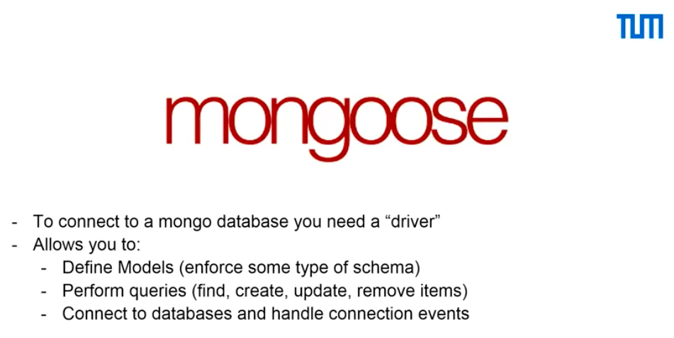
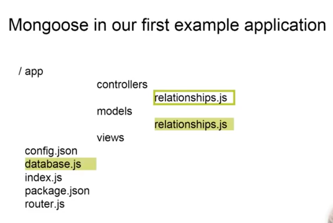
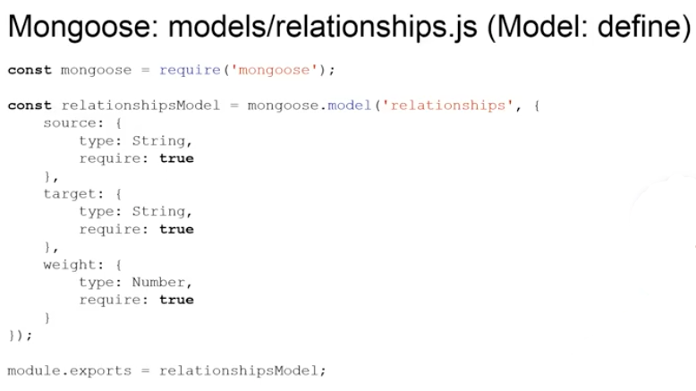
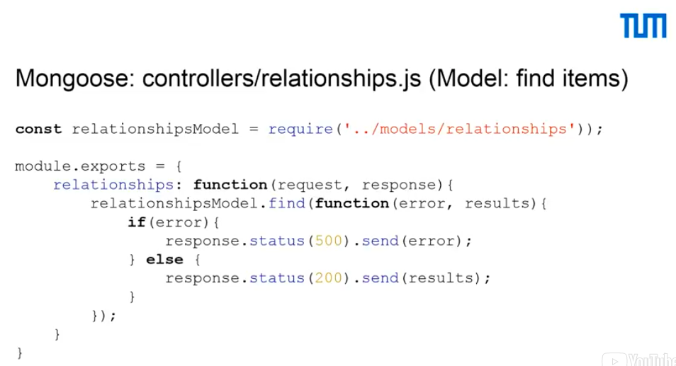
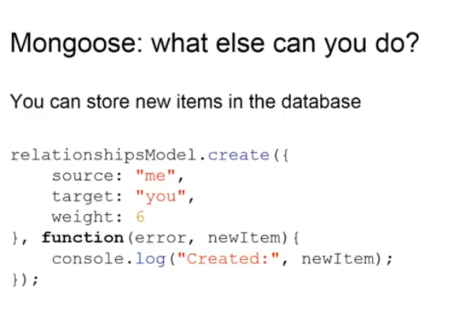
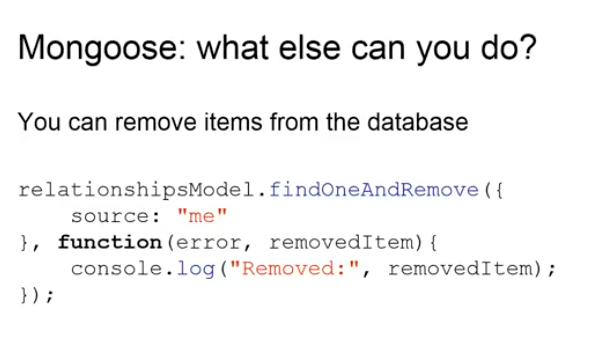
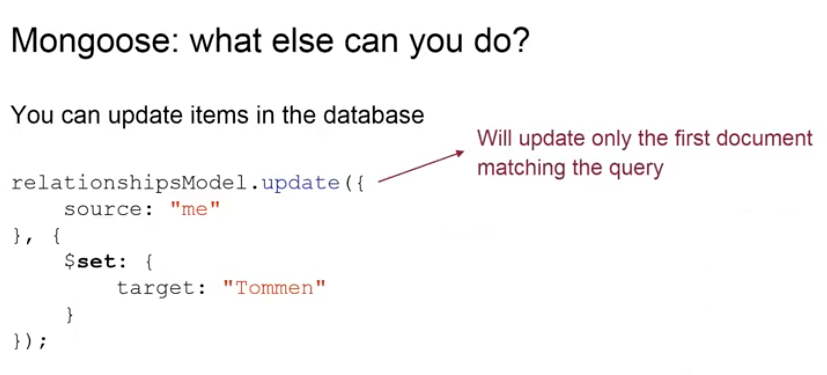
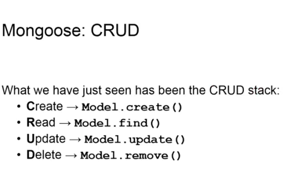

In this occasion, we are going to talk about controllers and models, which are two of the components of our example applications. Firstly, I want to talk to you about express.
Express, in short, allows you to react to incoming requests and send responses. It's possible to extend express by putting some layers between the incoming requests and the final function, which is going to execute to produce a response. These layers can, for example, distinguish between a user, which has authentication and a user that has not. So, that the final response is different for someone that is identified and different for someone who's not. Express can also be extended using other packages, but for our simple applications we didn't need to use them. So, we're not going to discuss about these. If you'd like to know more about these, please go on the web, there's plenty of guides to find out more about these.
In our API example, you will find express in the files that are highlighted on the left side. You will find also express in the same files on the complete example, but for the reference of these two components and what we are going to discuss in this video, we use the API. You will find express starting in the index.js and that's the first file we are going to look at.
So, in the index.js, we define express. We actually have to require it. So, the first thing that we do is we require express and we define it as a constant variable, because it won't change during the execution of our code. The second thing that we do is we define our application, which is app and it's an express application. So, we define it as an express app. With express we can set values and, specifically, in the third line of code, which will be compiled, we will see that you can define the port number on which our application is going to be listening. And this port number is by default going to be 3000. Later, we'll see that we can define a router, which is the logic that stands behind knowing which requests are coming in and what output or response to produce. In the last lines of code, what we see, is that we actually listen to incoming requests and we do so by listening on the port that we defined earlier. We also have a function, which is a callback and this function tells us that our express server is listening on the port that we defined earlier.
The other files that we want to look at for express is router.js and controllers/relationships.js (in our app folder). In router.js, we define that if a get request is coming at /api/relationships, the relationships controller has to perform a function, which is relationships. This function is defined as below. So, relationships is a function, which accepts a request, an incoming request, and has as a second object, the response, the outgoing response. What we do is we find objects in the relationships model, which we are going to explain shortly, so, don't worry. If the find is successful, we will return the results defined in the last meaningful line of code of this example, which is - response dot status 200 dot send results. Notice that status 200 in HTTP protocol, status 200 means that the request was answered successfully, that there was no problem and that we are answering back: ok, we have the data. On the other hand, if there was an error, we are sending a status 500, which in HTTP means that there was an error and that we are sending back an error object as well.
The next thing that we will look at is MongoDB. We have already discussed about databases before, but, specifically, we will use MongoDB in our example. As already said, MongoDB is a document-oriented database management system and it's non-relational, which brings us to the most important part of non-relational database management systems, which is they don't have a schema. A schema allows you to say that whenever you have an object from a database, it will always have the same look and feel to so say. Specifically, if we have a relational database system, we always know that we are going to find the same fields when we ask for the same data. So, if, for example, I have an object, which contains my name and my age, and I have a schema, which defines that there's always the need of my name, my surname and my age, all objects will always look like this. They can not differ. On the other hand, in MongoDB objects can differ. They can have more fields. For example, there could be name, age and location from where I come from, or there can be less fields. There could be only the name without the surname, because someone forgot to put it in, and the age. MongoDB actually stores objects in binary JSON format. It does so because binary JSON allows you to store not only the usual JSON files, but it also allows you to store music and images.
This is the example of a JSON file being stored into a MongoDB entry. On the top, we see an ordinary JSON file and on the
bottom we see what we would see if we insert this JSON file into MongoDB. As you see, MongoDB will give an attribute to
the object, which is "_id". This is very important, because you will need an identifier in the object to know that
this is the only object of its kind. If, for example, we have two people, which have exactly the same name, surname and
are of the same age, then we would not know which objects we actually want to get. But thanks to the "_id", which is a randomly
generated information, we always have just one field, which is for that specific object. The other things, which you see
on the bottom, are the same fields that we have already seen above, which are the name the surname and the age.
To actually use MongoDB in a Node application, you need something called a driver. The most common driver with Node.js is called mongoose.
Mongoose allows you firstly to connect to the database and handle connection events. The second important thing is that it allows you to define models. Models allow you to enforce some type of a schema, which is the thing that we have discussed before. So, through mongoose you could define that your objects always have to set the same structure and that Mongoose won't accept objects if they are not of the structure that you have defined them in. The other thing that mongoose allows you to do is to perform queries. So, you can find objects, create objects, update and remove items.
Let's see some code examples
First, we will find mongoose in these files. As you see, there is one file, which is highlighted a little bit differently than the other ones. This is because we're not directly using mongoose, but we are using the mongoose model, created in the relationships model in the controller. So, to produce a meaningful response, when an incoming request is coming.
Let's look at the model for the relationships
Let's look at the model for the relationships. Here, we define the model of our relationships. Firstly, we require mongoose, as we did we did with express in our previous example. The second thing that we do is we define our relationships model. Here, we have three fields, which are compulsory. So, they are always required. If you will try to create new objects, which don't have one of these fields, it won't work. Mongoose will complain. The three fields that we are going to need in our objects are source, target and weight. The first two source and target are of type string, while weight is a number-typed object.
The second location in which we find mongoose is our relationships controller.
Here, we can find objects in our model, as seen from the fourth line of code. So, we have our relationships model and we perform a find without filtering for results. Filtering for results would be something like: if I'm only interested in those objects in which the source is equal to, for example, 'me', I would put this as a filtering before I perform the find. You can look at how filtering is done in the examples on the mongoose website.
Mongoose also allows us to do other things: it allows us to create objects
So, in this specific case, we are creating a new object, which has a source 'me', as target 'you' and as weight '6'. If the object was successfully created, we will return an anonymous callback function, which will log the created object, as we see below here.
The next thing that we can do in mongoose is to find and remove objects.
Be careful, we are only finding and removing one object. This is very important, because you can easily remove many items from your database and maybe it is not what you want to do. You have to be very careful when you're coding these parts of your application. So, here, what we are doing is we are finding one object, which is the first object in which the source is 'me' and we are removing it. If the removal is successful, we will log into console the removed object.
Another thing that we can do is to update objects.
Also, here, you have to pay attention, because the updates function out-of-the-box will only update the first filtered item that is defined in a database. So, in this case, the first time it will find an object, which has a source 'me', it will update it and put or set the target as 'Tommen'. So, if we only have one object, which is the one that we created two slides back, instead of having source 'me' and target 'you', it would have source 'me' and target 'Tommen'. The weight will always be the same.
What we have seen now, were four basic operations, which are needed in every database. They are called the CRUD stack. They stand for create, read, update and delete.
We have also seen, which functions you can use to perform these operations, which are, on the model - the create function, on the model - define function, on the model - the update function and on the model - the remove function. I urge you again to pay attention when you implement the update and remove function, because you can easily generate mistakes within your data. So, we have seen two of the components of our example applications and in the next video we are going to discuss the missing component, which is the view. We decided to split these three components into the first two and the last component, which is the view, because sometimes you don't need the last component as already explained in previous videos.